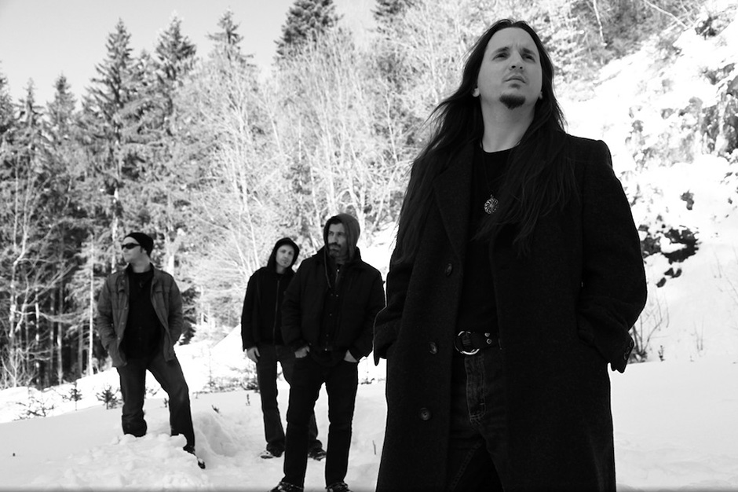
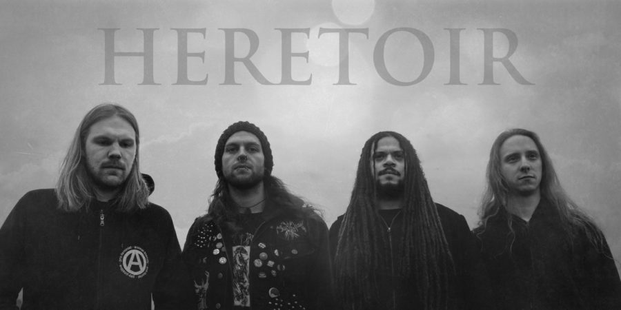
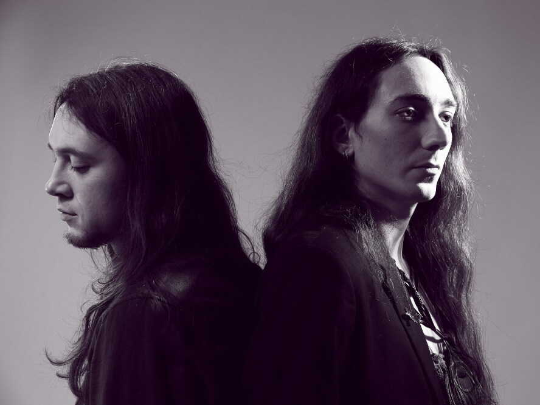
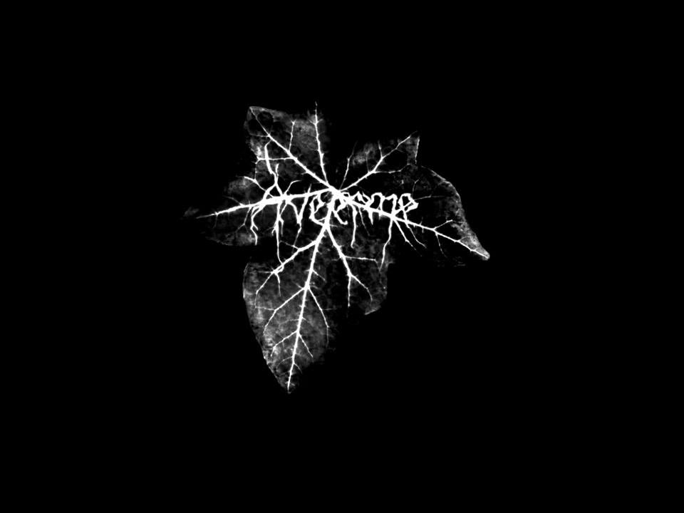
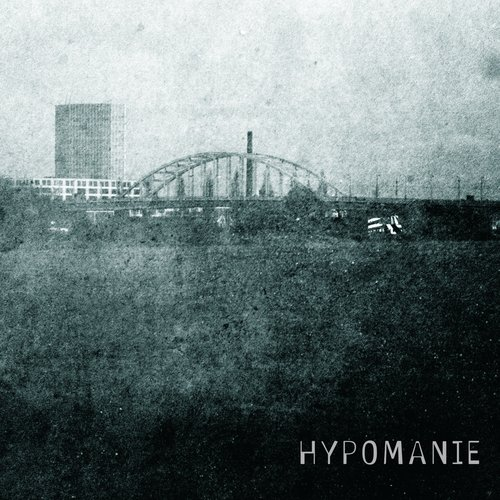
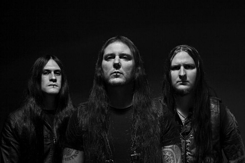

Agalloch
Agalloch (/ˈæɡəˌlɒx/) is an American extreme metal band from Portland, Oregon. Formed in 1995 by frontman John Haughm, they released five full-length albums, four EPs, two singles, one split single, two demos, four compilation albums and one live video album. They announced their disbandment in May 2016,[2] but reunited in 2023.

Heretoir
Heretoir is a german post black metal band that was founded by Eklatanz in 2006. The band name, which consists of
“Here-” from the English word "heretic" and the French syllable "-toir", is a fictional synonym for "going an own way".
Eklatanz’ lyrics deal with melancholy, nostalgia, isolation and, most significantly, with this "own way": the music is
meant to be a soundtrack for discovering one’s deepest thoughts, fears and the soul that rests in each one of us.
Heretoir is nostalgia, melancholy and a glimmer of hope...

Alcest
Alcest is a French post-black metal band from Bagnols-sur-Cèze, founded and led by Neige (Stéphane Paut) It began in 2000 as a black metal solo project by Neige, then became a trio, but members Aegnor and Argoth left the band following the 2001 release of their first demo, leaving Neige as the sole member. In 2009, drummer Winterhalter from Les Discrets joined Alcest, after eight years with Neige as its sole full-time member.

Aveerme
Aveerme is a Post Black Metal, Shoegaze, and Atmospheric Black Metal band founded by Gumusservi and Fernweh in 2012. The band released their debut album, "Zemheri," in 2017, followed by the EP "Kırağı" in 2022. In the same year, they also released the collaborative album "Attached From Different Realms" with the band Forgotten Life.
Woods Of Ypres
Woods of Ypres was a Canadian doom metal band from Windsor, Ontario. The band was founded in 2002, initially consisting of three members: David Gold, Aaron Palmer and Brian McManus. Their lineup frequently changed afterward, with over 20 members in the band through its various incarnations, which saw operations later based out of Toronto from 2003 to 2007, and Sault Ste. Marie from 2008 to 2011. Their only constant member was multi-instrumentalist and frontman David Gold, with the band ending after Gold's death in December 2011.

Hypomanie
Hypomanie was founded as a black metal project and stayed so for the first three releases. With the release of the self-titled EP, a more post-punk orientated sound was used, mixed together with the vocals from his earlier work. After, Selwin decided to leave black metal and began to play an instrumental shoegaze style, with some slight post-black metal influences.

Nargaroth
Nargaroth was formed from the ashes of a band called Exhuminenz in 1996 by Kanwulf, Charoon, and Darken, and the first recordings were completed in 1998.
The name "Nargaroth" comes from the word "Narg", which means nature.
Wagner has adopted the pseudonym Ash since circa 2007. His previous alias “Kanwulf" came from a French book with old Scandinavian names, such as the more famous Beowulf, and less famous names like Arkwulf.